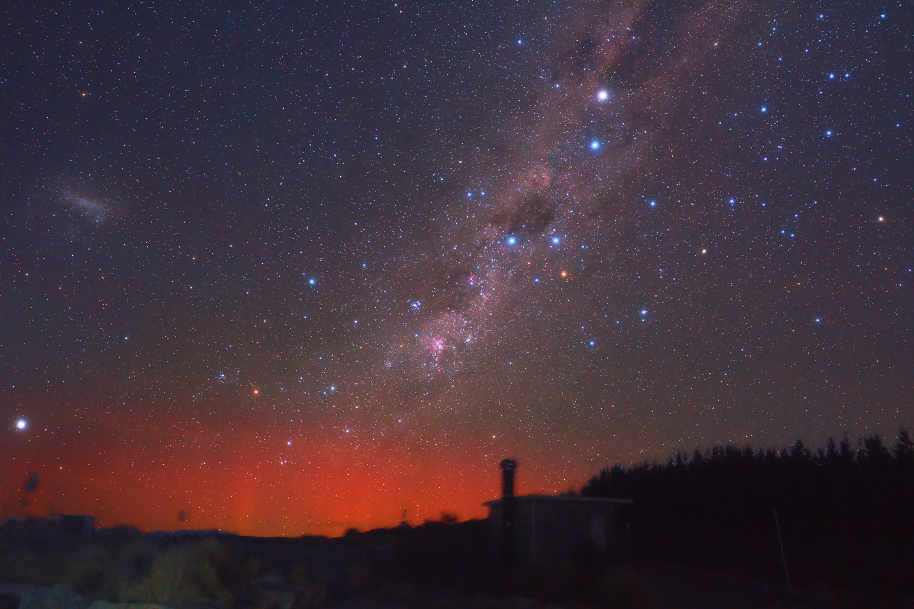
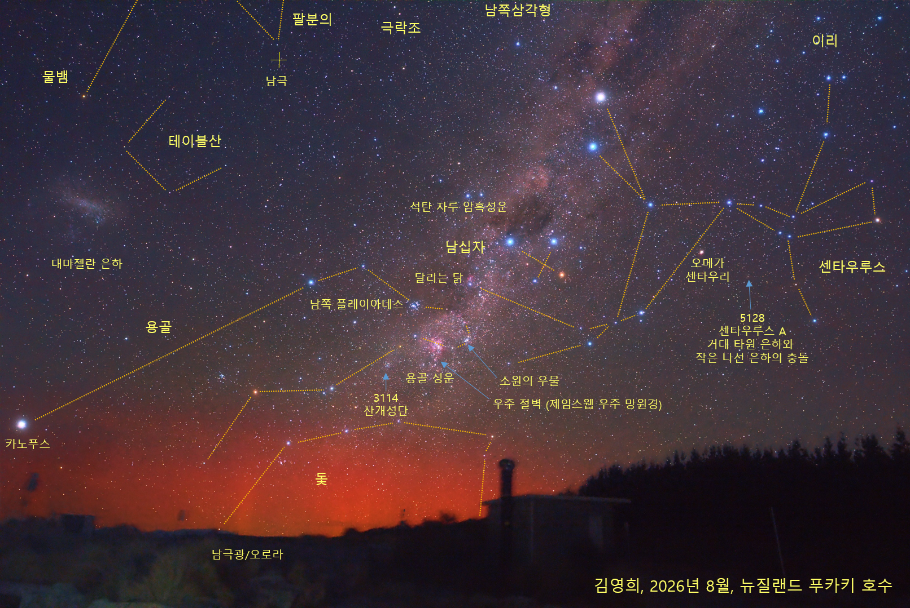
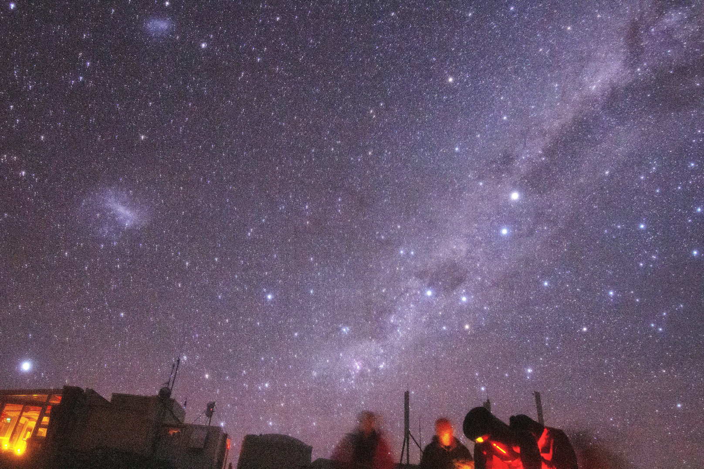
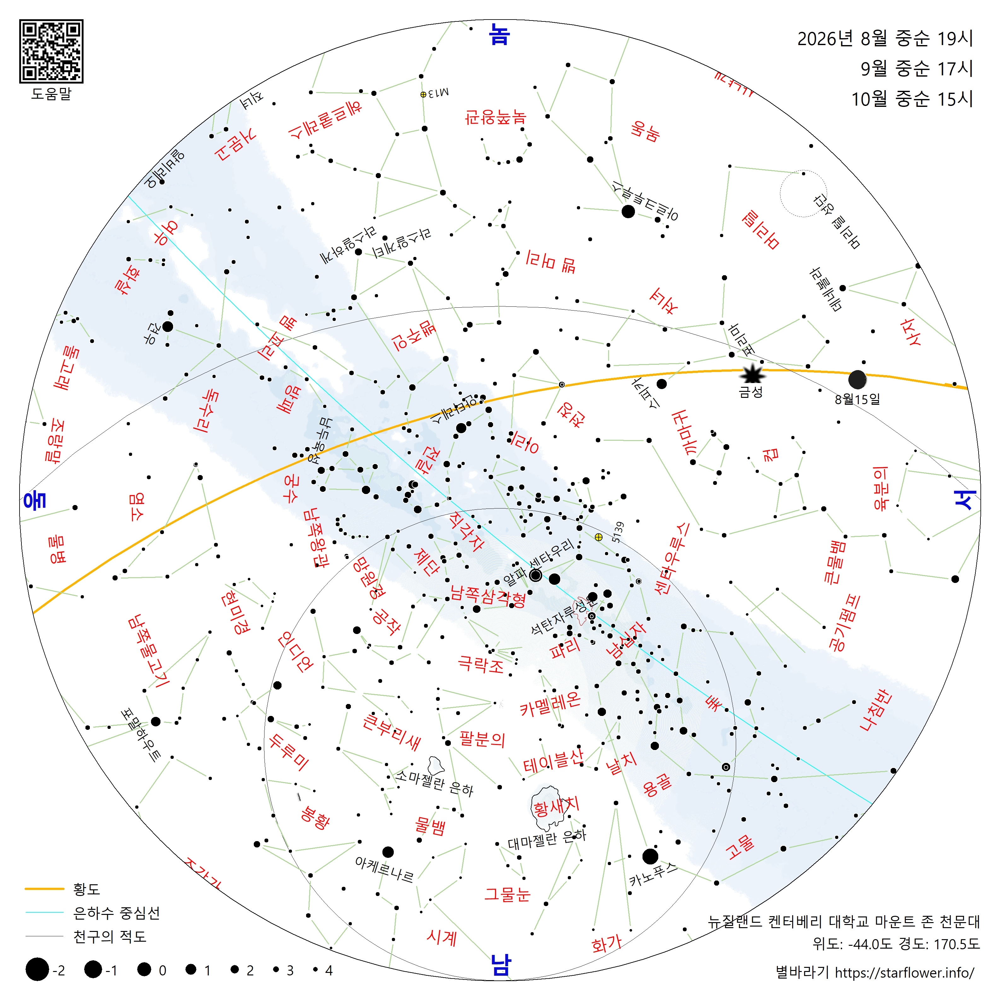
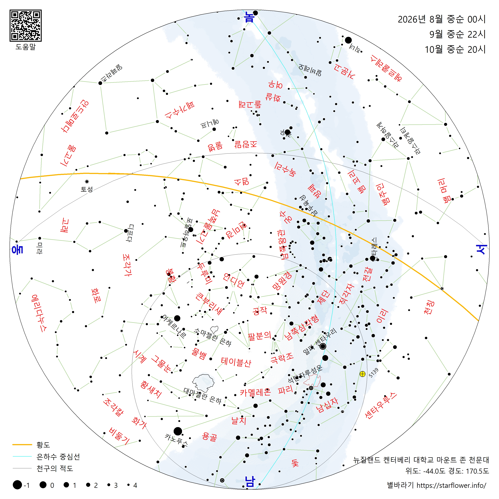
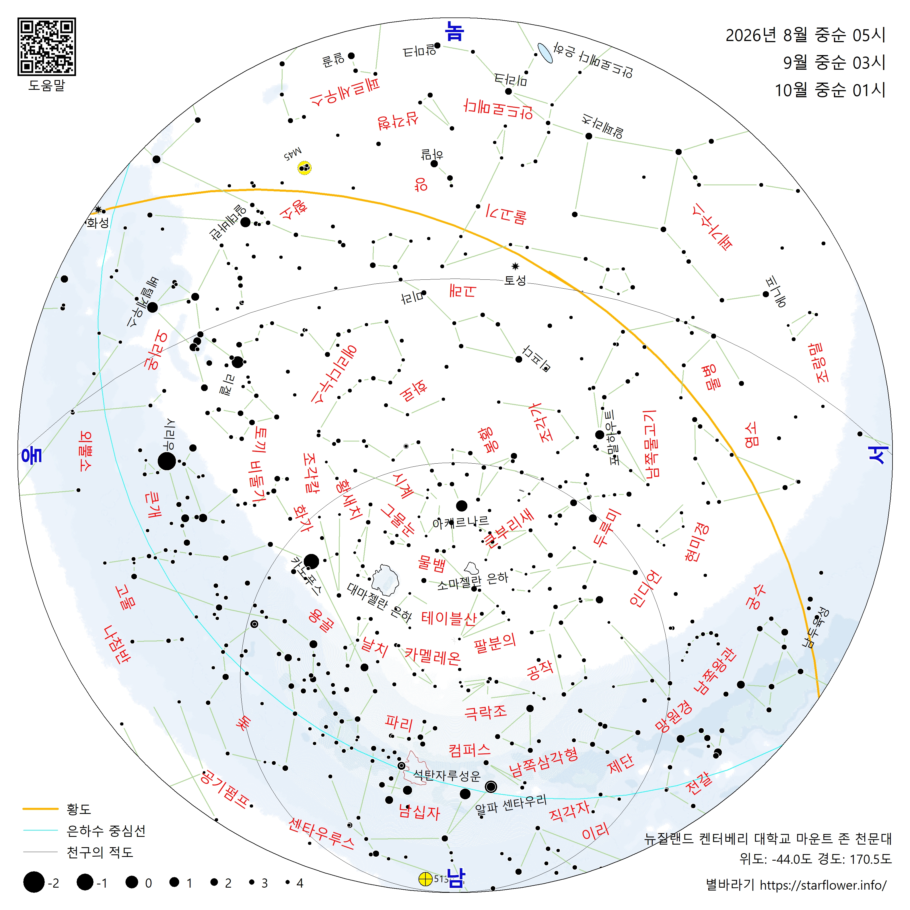
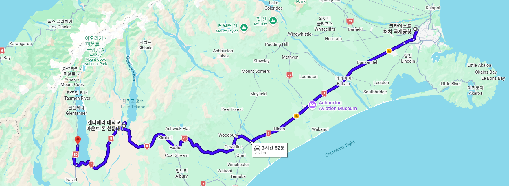

|
푸카키 호수 은하수 노출: 10초, f/2.8, ISO 8000, 6장 스택 시간: 2026년 8월 12일 HH:MM 보정: 김도익, PixInsight ?? |
테카포 호수 은하수와 오로라 노출: 10초, f/2.8, ISO 8000 시간: 2026년 8월 13일 HH:MM 보정: Windows 사진 편집 |
|
 |
 |
 |
| 저녁 19시 | 자정 | 새벽 05시 |
|
 |
| 구글맵 경로 |
| 2026년 08월 12일 |
KE401 1910 (익일) 07:00, 비행 시간 약 10시간 |
| 08월 13일 | 12:00 뉴질랜드 000 공항, 테카포 호수, 켄터베리 대학교 마운트 존 천문대 |
| 08월 14일 | 푸카키 호수 피터 룩아웃 |
별바라기 홈 > 관측 기록 및 장소 리뷰 >
최종 변경: 2026-09-09